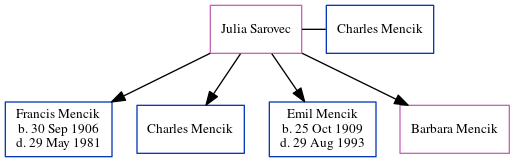

Julia Mencik (née Sarovec)
| [ Calendar ] | [ Surnames Index ] | [ Census Index ] | [ Family History ]Julia Sarovec and had 4 children with Charles Mencik: Francis Wenceslas, Charles, Emil and Barbara.
Children
- Francis Wenceslas was born on Sep 30, 1906
- Emil was born on Oct 25, 1909
Family Tree
Generated by ged2site. Last updated on Jun 12, 2024